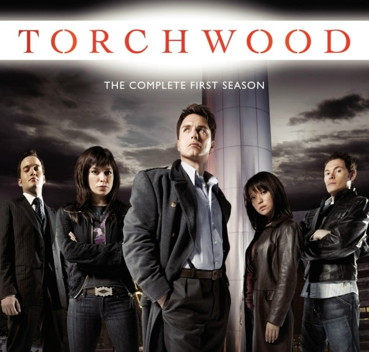

← Каталог портала

1. Всё меняется (Everything Changes)
2. День первый (Day One)
3. Машина призраков (Ghost Machine)
4. Киберженщина (Cyberwoman)
5. Маленькие миры (Small Worlds)
6. Бойня в деревне (Countrycide)
7. Дары данайцев (Greeks Bearing Gifts)
8. Они продолжают убивать Сьюзи (They Keep Killing Suzie)
9. Случайные ботинки (Random Shoes)
10. Вне времени (Out of Time)
11. Поединок (Combat)
12. Капитан Джек Харкнесс (Captain Jack Harkness)
13. Конец дней (End of Days)
👽Торчвуд - 1 сезон (2006-2007) ||| 👽Торчвуд - 2 сезон (2008)
👽Торчвуд - 3 сезон (2009) Дети Земли ||| 👽Торчвуд - 4 сезон (2011) День Чуда